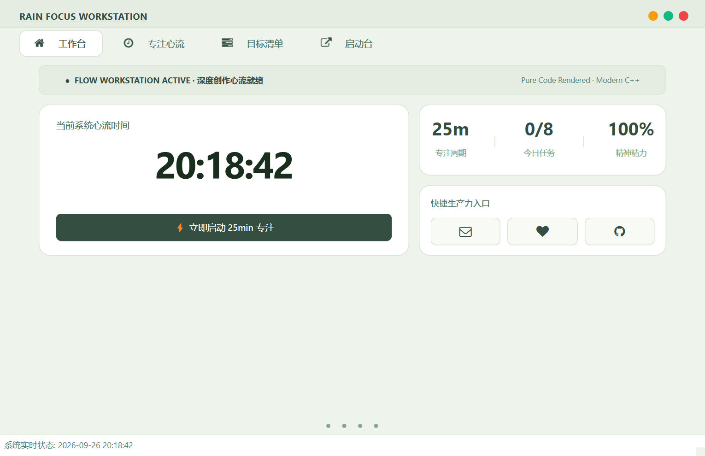
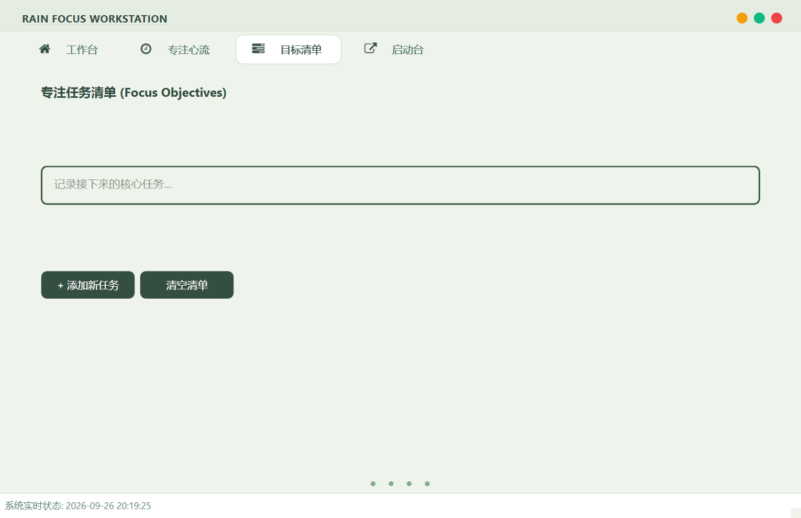
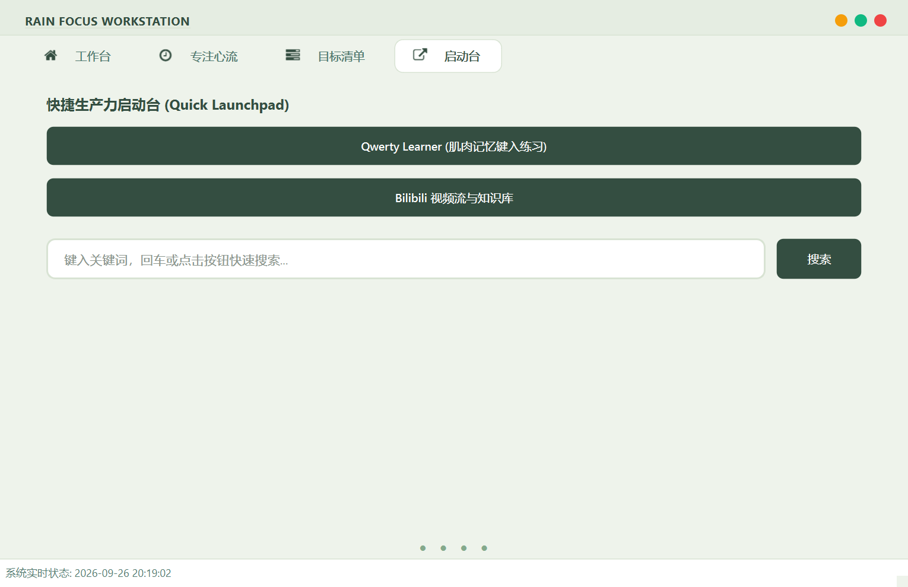

🌿 RAIN Focus Workstation
🌿 RAIN Focus Workstation
摘要 (Abstract)
RAIN Focus Workstation 是一款极简现代的桌面端个人心流与生产力管理套件。
项目抛弃了传统工具粗糙的厚边框与刺眼的高对比度渐变，汲取了目前流行的 Bento Grid（便当网格） 与 卡片微描边 交互美学，通过 全矢量纯代码渲染（0 图片依赖）、自适应动态字阶 和 5 款精选莫兰迪主题调色盘，为开发者、创作者及深度工作者提供纯净、无打扰的心流体验。
基于 Qt 6 & 现代 C++ 打造的 Bento Grid（便当网格）沉浸式专注心流工作台
📚 项目地址 (Project Address)
—- https://github.com/XiaoYu-1111/Qt_focus
📖 项目简介 (Overview)
界面与效果预览

| 界面1 | 界面2 | 界面3 |
|---|---|---|
 |
 |
 |
✨ 核心亮点 (Highlights)
- 🍱 现代化 Bento Grid 布局：信息密度恰到好处的模块化卡片设计，主页集成「当前心流时间」、「三联指标矩阵」与「快捷工具坞」。
- 🎨 纯代码矢量光栅化（0 PNG 资源）：
- 核心图标全部依托内存中
QPainter抓取FontAwesome矢量字形动态合成； - 交通灯三色控制点采用纯 QSS 圆角渲染，彻底告别位图模糊与边缘裁切。
- 核心图标全部依托内存中
- 🌓 5 种精选调色盘动态换肤：
- 包含 清爽米绿、优雅薰衣草、冰川静蓝、夏日草甸 与 极客暗黑；
- 右键二级菜单随时即时切色，支持
Q + A键盘一键循环轮转，所有矢量图标跟随主题色动态重绘。
- ⏱️ 专注状态显著字号突增：
- 闲置准备时保持
52px柔和预览字号； - 点击「开启心流」瞬间，倒计时字体立即膨胀至
110px 醒目超大字阶，带来极具张力的大屏全神贯注体验。
- 闲置准备时保持
- 🪟 工业级 28px 基准线对齐：
- 窗口标题、导航 Tab 栏、认证标头及主卡片在左侧严格遵循
28px垂直对齐规范，告别错位卡顿感。
- 窗口标题、导航 Tab 栏、认证标头及主卡片在左侧严格遵循
- 🔍 响应式舒适搜索栏：
- 单行
QLineEdit纯净居中排版（46px 高度），彻底消灭多行编辑器的文字截断与滚动条滑块，支持回车键一键直达搜索。
- 单行
🧩 核心功能模块 (Features)
| 模块名称 | 图标 | 功能说明 |
|---|---|---|
| 工作台 (Home) | icon_home |
核心时间看板、实时年月日星期提醒、25m/0-8/100% 状态概览矩阵、外部反馈及仓库一键直达 |
| 专注心流 (Focus) | icon_time |
自定义番茄钟倒计时（1~300 分钟）、110px 显著醒目大字阶、微细进度条、暂停/继续/重置流转 |
| 目标清单 (Tasks) | icon_tasks |
约束型每日 8 项核心任务管理、彩色微卡片输入框、支持独立增加与安全批量清空 |
| 启动台 (Resources) | icon_external_link |
常用知识库外链跳转、居中舒适搜索栏（支持 Enter 回车直接拉起系统浏览器检索） |
🎨 调色盘规范 (Theme Palettes)
系统采用 设计令牌（Design Tokens） 架构，将色彩完全解耦，支持以下 5 套主题：
- 🌿 清爽米绿 (Light Sage) - 护眼淡绿底色 (#eef3eb) + 森林墨绿 (#344e41)
- 优雅薰衣草 (Lavender) - 柔美灰紫底色 (#f5f3f8) + 莫兰迪紫 (#6b3ba7)
- 🌊 冰川静蓝 (Nordic Blue) - 冰川冷灰蓝底 (#edf4f8) + 深邃海洋蓝 (#026896)
- 🌻 夏日草甸 (Summer Meadow) - 暖调奶白底色 (#faf7ee) + 草绿 (#467a57) + 暖阳橙 (#f28e00)
- 🌙 极客暗黑 (Dark Slate) - 曜石暗黑底色 (#0f172a) + 荧光天蓝 (#38bdf8)
⌨️ 快捷键与交互操作 (Shortcuts & Gestures)
| 操作 | 交互响应 |
|---|---|
按下 Q + A |
依次在 5 套调色盘主题之间即时平滑轮转 |
| 鼠标右键单击 | 唤起现代右键上下文菜单（调色盘子菜单、专注模式、还原尺寸、关于） |
| 双击顶部标题栏 | 在「最大化」与「黄金初始比例 (1020 × 660)」之间切换 |
| 在搜索栏按回车 | 直接拉起浏览器发起百度检索 |
| 按住标题栏拖动 | 自由平滑拖动移动无边框窗口 |
🛠️ 技术栈与依赖 (Tech Stack)
- 语言标准：C++17 / C++20
- GUI 框架：Qt 6.6.3 (兼容 Qt 6.2+ LTS)
- 编译器：MSVC 2019 / 2022 (x64)
- 矢量图标：FontAwesome 4.7 字体光栅化引擎
- 架构设计：面向对象设计、设计令牌 (Design Tokens)、RAII 内存管理、事件过滤器 (Event Filter)
📂 项目文件结构 (Project Structure)
```text
RAIN_Focus/
│
├── Qt_focus.h # 核心主窗口头文件（前置声明、组件生命周期管理）
├── Qt_focus.cpp # 主窗口逻辑实现（Bento 网格构建、计时器、矢量绘制引擎）
├── style.h # 集中式主题样式类（5 套调色盘 Tokens 与 QSS 模板构建器）
├── fontawesomeicons.h # FontAwesome 矢量字符枚举定义
├── fontawesomeicons.cpp # 矢量字体加载单例实现
├── my_button_class.h # 自定义增强型按钮扩展
├── roundprogressbar.h # 圆形环状进度条扩展组件
├── tabhover.h # Tab 底部悬浮小圆点指示器组件
├── main.cpp # 应用程序入口
│
└── Resources/ # Qt 资源文件目录 (*.qrc)
└── fontawesome-webfont.ttf # 字体矢量文件
🚀 构建与运行 (Build & Run)
方式一：使用 Visual Studio (推荐)
- 确保安装了 Visual Studio 2022 及 Qt Visual Studio Tools 插件；
- 确认本地已配置 Qt 6.6+ (msvc2019_64 或 msvc2022_64)；
- 双击打开 Qt_focus.sln 解决方案；
- 选择编译平台为 Release | x64；
- 按下 Ctrl + Shift + B 构建解决方案，生成成功后按 F5 启动。
方式二：使用 CMake
1. 克隆本仓库
git clone https://github.com/XiaoYu-1111/Qt_focus.git
cd Qt_focus
2. 创建并进入构建目录
mkdir build && cd build
3. 运行 cmake 生成构建脚本 (指定你的 Qt6 安装路径)
cmake .. -DCMAKE_PREFIX_PATH=”D:/Qt/6.6.3/msvc2019_64”
4. 执行编译
cmake —build . —config Release
📝 贡献与致谢 (Credits)
- 开发者：RAIN (XIAOYU)
- 开源协议：本项目基于 MIT License 开源。
- 关于与支持：欢迎提交 Issue 或 Pull Request，一起让沉浸式生产力工具更加优雅！